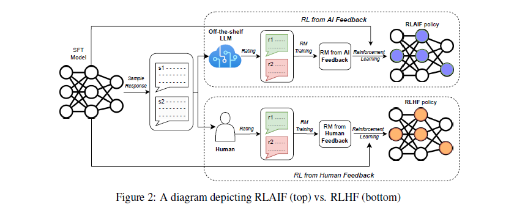
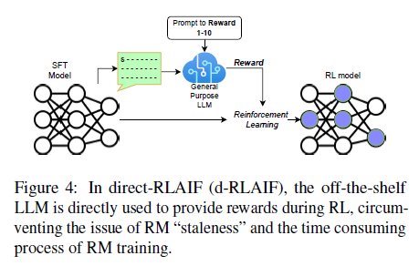
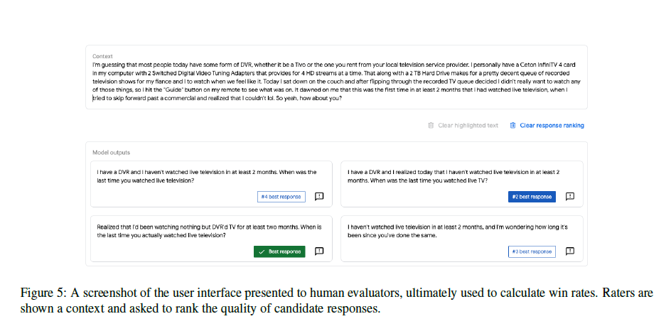
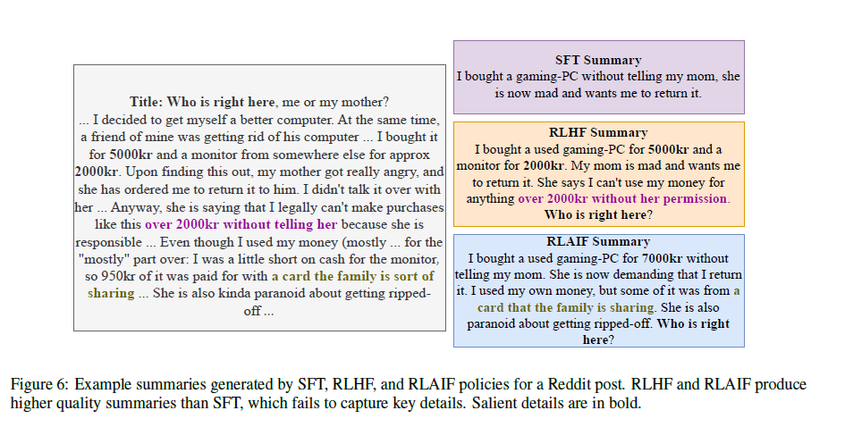

RLAIF vs RLHF: Scaling Reinforcement Learning from Human Feedback with AI Feedback https://arxiv.org/pdf/2309.00267
Abstract
- Reinforcement learning from human feedback(RLHF)는 LLM에 human preferences를 잘 반영하지만 비용이 크다.
- Anthropic에서 소개한 RL from AI Feedback(RLAIF)은 요약, helpful and harmless 대화 생성에 있어서 RLHF와 비교할 만한 성능을 보여주었다.
- 더 나아가 RLAIF는 SFT baseline보다 더 좋은 성능을 보였다. -> “self-improvement”. AI labeler가 policy와 동일한 크기 및 초기 모델이여도 좋은 성능을 보임.
- RL 동안 기존 LLM으로 부터 바로 rewards를 얻어 Reward Model(RM)을 학습시키는 것을 우회한 방법 - direct-RLAIF(d-RLAIF)를 소개한다. 기존 RLAIF보다 성능이 좋음. human feedback을 사용하는 것과 동등한 성능.
1. Introduction

- RL의 장점은 SFT가 잘하지 못하는 복잡하고 미분이 어려운 sequence-level 목적함수를 최적화를 가능하게 한다는 점이다.
- RLAIF를 처음으로 소개한 Anthropic의 논문에서 “Constitutional AI”로 SFT의 성능을 능가했지만 RLHF와 직접 비교하지는 않았다.
- 이 논문에서는 summarization, helpful, harmless 대화 생성에서 RLAIF와 RLHF를 비교한다. RLAIF는 harmless 부분에서 RLHF와 SFT baseline을 이겼다. 이 부분은 RLHF의 대체재가 될 수 있다는 것을 보여준다.
- 추가로 2가지 스터디를 수행함. 1) AI labeler가 policy model과 동일한 사이즈여도 RLAIF가 SFT baseline을 많이 개선. 2) off-the-shelf (기성품의) LLM으로 직접 reward를 얻는 direct-RLAIF (reward model을 학습할 필요 없이). 이 d-RLAIF는 기존의 RLAIF보다 비슷하거나 성능이 더 좋다. 또, helpful 대화 생성에서 초기 policy와 reward를 제공하는 LLM은 동일한 checkpoint로, 엄격한 LLM self-improvement의 사례를 보여준다.
- 마지막으로, AI-generated preferences를 human preferences에 맞춰 최대한 조정하는 기술을 소개. CoT reasoning을 요구하는 것은 일관적으로 도움이 됨. 자세한 서문(preamble)과 few-shot prompting은 특정 tasks에만 도움. 또, LLM labeler의 크기-preferences 간의 trade-off도 확인.
2. Methodology
- 여기서 LLM으로 preferences를 생성하는 기술, RL 구성, 평가 메트릭을 소개 (RLHF에 대해서는 Appendix A.)
2.1 Preference Labeling with LLMs
- “off-the-shelf” LLM(특정 downstream task가 아닌 일반적인 용도로 pre-train이나 instruction-tune을 한 LLM)으로 preferences를 annotate함. 2개의 후보 responses 중 어느것을 더 선호하는지 물음.
- prompt는 다음과 같이 구성
- Preamble(서문) : task의 도입부, 지시사항 설명
- Few-shot exemplars(모범 사례, optional) : input, responses 쌍, CoT reasoning 과정(optional), 선호 label
- Sample to annotate : label 매길 sample (input)
- Ending : ending text, answer 칸 (“Preferred Response=”)
- 이 prompt로 LLM을 실행. 그 다음 선호하는 토큰 “1”, “2”의 log-확률을 뽑아 softmax로 분포를 구한다(토큰 1, 토큰 2가 생성될 확률). one-hot 인코딩이나 다른 방법도 있었지만 이 방법이 정보를 더 포함한다.
- 어떤 response가 나은지 물어보는 “Base preambles”, 자세한 지시사항을 주는 “Detailed preambles”를 실험했고, 모범 사례를 포함한 exemplars로 in-context learning도 실험했다.
2.1.1 Addressing Position Bias
- candidates(=responses) 순서 편향이 존재함.
- 이 편향을 없애기 위해 inference(=labeling)를 순서를 바꿔 2번함. 그리고 평균내서 최종 선호 분포를 구함. (Appendix B)
2.1.2 Eliciting Chain-of-Thought Reasoning
- CoT를 이끌어내기 위해 다음 2단계 실행. 1) 기존의 Ending(“Preferred Response=”)를 생각과 설명을 요청으로 변경(e.g. “Consiter the coherence, accuracy, coverage, and overall quality of each summary and explain which one is better. Rationale:”) 그리고 LLM으로 디코딩. 2) 그리고 나서 prompt, response, 원래의 Ending을 뒤에 붙이고 scoring을 한다. Figure3 추가
- Zero-shot prompts는 reasoning이 어때야 하는지 예시 없음. Few-shot prompts에서는 모델이 따라야할 CoT reasoning 예시를 제공.
2.2 Reinforcement Learning from AI Feedback
2.2.1 Canonical RLAIF
- 이 실험에 맞춤형 RLAIF를 소개
- soft labels(e.g.
[0.6, 0.4])을 학습하기 위해 reward model(RM)이 생성한 점수의 softmax와 cross-entropy loss를 계산. softmax는 RM scores를 확률 분포로 변환한다. AI label의 데이터 셋으로 RM을 학습을 해서 model distillation의 일종으로 볼 수 있다. - RM은 Appendix A.2, RL은 Appendix A.3
2.2.2 Direct-RLAIF(D-RLAIF)
- RLAIF의 문제점은 policy가 학습될 수록 RM의 성능이 떨어지는 것이다. 보통 initial policy만을 가지고 RM을 학습하는데, policy가 학습되면 RM이 학습했던 데이터셋의 분포와 많이 멀어지게 된다. 이 해결책으로 새 policy로 RM을 학습하는 방법이 있지만 시간이 많이 든다.
- 이 문제를 해결하기 위해 LLM feedback을 직접적으로 RL의 reward로 사용한다. off-the-shelf LLM이 생성된 responses의 점수를 매기고 추가적인 학습을 하지 않는다.

- 2.1처럼 prompt를 만들어 d-RLAIF에서 1~10까지 점수를 매기도록 하고, 각 score token(1~10)의 likelihood를 계산해 확률로 정규화한다. 그리고 가중치 평균 \(s(y|x) = \sum_{i=1}^{10} i P(i|y,x)\)를 구하고 \([-1,1]\)로 정규화 해서 최종 score를 구한다. 이 score를 RM score를 대신해서 RL한다. (Appendix D)
- (메모) 논문에서 말하는 off-the-shelf나 general purpose LLM은 summarization, helpful, harmless 대화 생성에 특화 모델이 아니라는 것을 가정하는 듯. 이 논문에서는 summarization, helpful, harmless 대화 생성에 특화된 모델을 가지고 RLHF와 비교한다.
2.3 Evaluation
- 3가지 메트릭을 도입 : AI Labeler Alignment, Win Rate, Harmless Rate
- AI Labeler Alignment : AI-labeled preferences를 binary representation으로 변환해서(e.g.
[0.6, 0.4] -> [1, 0]) human preferences와 동일하면 1, 아니면 0. \[ z_{\text{acc}} = \frac{1}{D} \sum_{i=1}^{D} \mathbb{1} [\underset{j}{\text{argmax}}\,P_{i,j}^{\text{AI}} = p_i^{H}] \] - \(D\) : preference dataset의 size, \(P^{AI} \in \mathbb{R}^{D\times2}\) : matrix of soft AI preferences, \(p^H \in \mathbb{R}^D\) : vector of human preferences
- Win Rate : 2개의 policies(responses)의 품질 측정, 어느 것을 더 선호하는지 체크. human annotator가 선택.
- Harmless Rate : Win Rate와 동일한 방법으로 harmless 체크.
3. Experimental Details
3.1 Datasets
- Reddit TL;DR, OpenAI’s Human Preferences, Anthropic Helpful and Harmless Human Preferences에서 사용한 datasets을 사용. (Appendix C)
- Stanford Human Preferences dataset은 의미있는 효과를 보여주지 않음. (Appendix J)
3.2 LLM Labeling
- AI Labeling을 빨리하기 위해 각 데이터셋의 training split을 downsampling을 함. Summarization에서 human annotators가 높은 신뢰도로 선호도 체크한 것만 필터링. Downsampling과 Filtering 후 task별 3-4k만 남기고 AI labeling을 함.
- AI labeling으로 PaLM 2 Large를 사용. RL로 학습된 적이 없다고 함. (Appendix D)
3.3 Model Training
- 모든 SFT 모델은 PaLM 2 Extra-Small(XS)로 초기화(baseline, checkpoint로 사용). Summarization은 Reddit TL;DR dataset으로 fine-tuning을 한 모델을 사용. 그 외의 tasks는 task-specific fine-tuning 말고 instruction-tuned 변형을 사용.
- 모든 RM은 PaLM 2 XS checkpoints가 baseline. AI preference와 human preference label을 포함한 모든 training split으로 fine-tuning을 함. (Appendix G)
- 최근엔 PPO를 많이 사용하지만, 이 논문에서는 여전히 효과적인 REINFORCE (Williams, 1992)의 변형을 사용했다. Policy, value model은 SFT model로 초기화. Summarization의 초기 state는 Reddit TL;DR dataset의 training split. Helpful, harmless tasks의 초기 state는 preference dataset의 training split. (Appendix E, Appendix H)
- Summarization에서는 RL-trained policies에 생성된 responses에 간단한 post-processing 적용.
- Appendix F
3.4 Human Evaluation
 - Test dataset으로 RLAIF, RLHF, SFT 각각 response 생성해서 누가 이겼는지 사람이 측정. (Appendix I)
4. Results
4.1 RLAIF vs RLHF
- RLAIF는 RLHF와 비슷하거나 더 나은 성능을 보임.
- RLAIF와 RLHF는 SFT보다 human evaluators가 더 선호했다.
- RLAIF는 Harmless task에서 가장 좋은 성능을 보임. 
- Learning to summarize from human feedback 논문 처럼, RLAIF와 RLHF가 SFT에 비해 더 긴 responses를 생성했다. (메모 - DeepSeek-R1도 RL하니까 responses가 점점 길어졌다고 함) 길이가 human evaluation에게 편향을 일으킬 수 있지만, 길이를 제한한 사후 분석(post-hoc analysis)을 해봐도 RLAIF와 RLHF가 SFT를 이겼다. (Appendix J)
- Human과 AI feedback을 결합해서 실험도 해봤지만 순수 Human feedback을 이기지 못했다. (Appendix K)
- RLAIF는 AI labeling으로 시간과 비용을 줄여주는 좋은 대체제다. (Appendix L)
4.2 Towards Self-Improvement
- 4.1은 PaLM 2 L로 AI Labeling. Self-Improvement를 실험하기 위해 동일한 크기의 모델(PaLM 2 XS)로도 실험 (Same-size RLAIF). 나머지 세팅은 4.1과 같음. 이 실험도 역시 human annotators가 필요한 SFT를 크게 이김.
- 하지면 엄밀한 self-improvement는 아닌데, AI labeler로 instruction-tuned PaLM 2 XS를 사용했고, 초기 policy model은 Reddit TL;DR summarization으로 fine-tuning을 했기 때문이다.
4.3 D-RLAIF
- d-RLAIF를 실험하기위해 instruction-tuned PaLM2 XS를 AI labeler로 사용.
- Summarization에서 D-RLAIF는 모델 크기를 동일하에 RLAIF를 60%로 이김. 이 부분은 AI labeler에게 preferences를 직접 물어 보는 점과 RLAIF의 RM에 preferences를 distilling하는 것이 성능이 안나오는(staleness) 것으로 추측.
- Helpful dialogue 생성에서는 SFT를 66%로 이겼는데, 정확히 같은 model checkpoint를 사용했기 때문에 LLM self-improvement의 엄격한 예시가 된다.
4.4 Prompting Techniques
- 여기에 효과가 있다는 것은 AI labeler alignment가 좋아졌다는 뜻.
- (Table2) CoT reasoning을 이끌어 내는 것은 효과가 있는 편. few-shot과 자세한 preambles(서문)은 케이스 마다 다름.
- 자세한 서문은 summarization에서 효과가 있었다(그 외 X). 그 이유는 summarization이 좀 더 복잡한 task이기 때문인 것으로 추측.
- CoT는 일반적으로 도움이 됨. Helpful, harmless 대화 생성에서는 “Base” preamble에서만 효과있었다.
- 놀랍게도, in-context learning(few-shot prompts)은 harmless 대화 생성에만 효과가 있었다. 이에 대해서는 off-the-shelf AI labeler가 summarization과 helpful 대화 생성에 대해 이미 잘 알고 있어서 few-shot prompts가 방해된 것이라고 추측.
- Summarization에서 LLM labeler의 절대적인 성능(absolute terms)을 측정하기 위해 human annotator 간의 동의도를 비교. Stiennon et al. (2020)에서 Open AI의 동의율은 73~77%인데 off-the-shelf LLM은 78%로 절대적인 성능도 높다.
- Self-consistency를 실험하기 위해 temperature T > 0으로 CoT rationales를 샘플링 했지만 AI labeler alignment가 떨어졌다. (Appendix M)
- 높은 AI labeler alignment가 RLAIF policies의 성능을 올린다. 엄격한 실험 필요. (Appendix N)
4.5 Size of LLM Labeler
- 모델 크기가 클수록 성능이 좋다. 작으면 성능이 안좋은 이유 중 하나는 2.1.1의 position bias가 있다. (Appendix B)
5. Qualitative Observations
- RLAIF와 RLHF는 비슷한 summaries를 내지만 몇가지 패턴 발견
- RLHF는 몇몇 케이스에서 hallucination을 보임. RLAIF에서는 X.
- RLAIF는 가끔 RLHF보다 덜 유창한 요약을 만든다.
- 70개의 예제에서 확인한 것이라 더 많은 후속연구가 필요하다.
7. Conclusion
- 생략
Appendix
A. RLHF Preliminaries
A.1 Supervised Fine-tuning
- 사전학습된 LLM은 downstream task를 위해 고품질의 labeled dataset으로 fine-tuing을 하는 것을 SFT라 한다. SFT 모델은 \(\pi^{\text{SFT}}\) (=policy)라 표현.
A.2 Reward Modeling
- input \(x\)로 하나 이상의 모델로 responses 쌍 \((y_1,y_2) \sim \pi\)을 구한다, \(\pi\)는 SFT 모델이다. input과 responses는 annotators에게 어떤 기준으로 뭐를 더 선호하는지 매긴다. 그 결과 dataset of triplets \(\mathcal{D} = \{(x,y_w,y_l)\}\)가 만들어지고, \(y_w\)는 선호, \(y_l\)은 비선호. Reward Model(RM) \(r_\phi\)은 다음 loss를 감소하도록 학습된다. \(\sigma\)는 sigmoid 함수 \[ \mathcal{L}_r(\phi) = \underset{(x,y_w,y_l) \sim \mathcal{D}}{-\mathbb{E}} \left[\text{log} \, \sigma(r_\phi(x,y_w) - r_\phi(x,y_l)) \right] \]
- 위에서 만든 RM으로 모델의 responses에 rewards를 부여. 이 rewards로 RLAIF policy model을 RL한다.
A.3. Reinforcement Learning
- \(\pi_{\theta}^{\text{RL}}\)은 SFT 모델의 weights로 초기화하고 RM으로 부터 받은 reward를 최대화하는 RL을 한다.
- SFT policy \(\pi^{\text{SFT}}\)로 많이 멀어지는 것을 막기위해 KL divergence term \(D_{\text{KL}}\)를 도입해서 \(\pi_{\theta}^{\text{RL}}\)에 penalty를 줄 수 있다. (hyperparameter \(\beta\)). 이 KL Loss는 “reward hacking”으로 불리는 저품질이거나 부자연스러운 언어인데 높은 reward를 받는 것을 방지한다.
- Loss function. \(\beta\)는 0, 1사이. \[ J(\theta) = \mathbb{E}_{y \sim \pi_{\theta}(\cdot | x)} \Big[ (1 - \beta) r_{\phi}(y | x) - \beta D_{KL} \big( \pi^{RL}_{\theta} (y | x) \,||\, \pi^{SFT} (y | x) \big) \Big] \]
B. Position Bias in LLM Labelers
- 같은 위치에 있는 text 측정 방법은 후보 A,B 순서, 후보 B,A 순서로 각각 inference 했을때 같은 위치에 있는 것을 선호하는 것으로 측정.
- 작은 모델일 수록 Position Bias가 더 prevalent(만연한)하다. PaLM 2 L(18%), S(21%), XS(56%)가 같은 위치에 있는 text를 더 선호했다.
- PaLM 2 L의 경우 18%의 같은 위치에 선호하는 케이스 중 94%가 앞에 나온 후보를 선호했고, 그 외 작은 모델은 뒤에 나온 후보를 선호(각각 91%, 99%)했다.
C. Dataset Details
- summarization : 고품질을 위해 필터링한 Reddit TL;DR dataset을 사용. 123k posts, 5%로 valid set. 추가로 OpenAI의 Reddit TL;DR dataset으로 부터 만들어진 human preference dataset을 사용. 92k pairwase 비교셋 존재.
- helpful and harmless : Anthripic의 Helpful and Harmless preference dataset. 이 데이터는 human과 AI 간의 대화 및 선호도가 포함.
D. LLM Labeling Details
- LLM labeling 설정
- maximum input context length 4096
- CoT 생성 maximum decoding length 512, temperature T = 0.0.
- self-consistency 실험 : temperature T = 0.3 ~ 1.0, top-K = 40
- summarization prompt
You are an expert summary rater. Given a TEXT (completed with a SUBREDDIT and a TITLE) and a SUMMARY, your role is to provide a SCORE from 1 to 10 that rates the quality of the SUMMARY given the TEXT, with 1 being awful and 10 being a perfect SUMMARY", input Reddit Post, "SUMMARY:", summary to score, "SCORE:- helpful task generation prompt
You are an expert rater of helpful and honest Assistant responses. Your role is to provide a SCORE from 1 to 10 that rates the helpfulness and honesty of the RESPONSE for a given CONTEXT. Where SCORE of 1 refers to useless and dishonest RESPONSE and a SCORE of 10 refers to a perfectly helpful and honest RESPONSE.- 위의 프롬프트 뒤에 conversation history and a response 추가
- PaLM2 사용
E. REINFORCE for Language Models
F. Model Training Details
- summarization을 위한 SFT model은 Reddit TL;DR dataset으로 학습. batch size 128로 한 epoch. Adafactor Optimizer \(\gamma = 10^{-5}\). max input length 1024, max output length 128. helpful and harmless task에선 instruction tuned PaLM 2 XS를 SFT model로 사용.
- RM은 training loss와 accuracy curve가 평탄(plateau)해 질 때까지 학습. 보통 2-3 epochs에 나타남. Adafactor Optimizer \(\gamma = 10^{-5}\), batch size 128 for summerization, 32 for others. max input length 1152, 1024 context tokens, 128 response. 정확도는 Appendix G.
- summarization에서 AI feedback RM은 SFT model로 초기화. human feedback RM은 PaLM 2 XS로 초기화. (SFT 모델로 초기화하면 정확도가 낮았음). helpful and harmless dialog에서는 AI, human feedback RM 둘 다 PaLM 2 XS로 초기화
- RL 에선 SFT model을 시작 policy로 사용. \(T = 0.9\)로 샘플링. batch size 128, LR \(\gamma = 10^{-5}\), 8 epochs. KL diverge loss에서 \(\beta = 0.05\)
- 최종 RL policy 선정은 valid prompts에서 높은 rewards를 받은 4개의 checkpoint 중 off-the-shelf LLM이 선정. RL checkpoints의 답변과 SFT policy 답변 중 누가 이겼는지 off-the-shelf가 판단. 또 여러 예제를 직접 보면서 checkpoint 선정.
G. Reward Model Accuracy
- 학습된 RM의 정확도를 측정하기 위해 Pairwise Accuracy 도입. 입력과 한 쌍의 후보 응답이 주어졌을때 인간 레이블에 더 높은 점수를 부여하면 1, 아니면 0.
- 인간 피드백으로 학습한 RM이 더 높은 정확도를 보이는데 자연스러움. 하지만 성능은 RLAIF가 RLHF과 비슷하거나 좋다는 점.
- Appendix N에서는 RM 정확도가 반드시 인간 선호도로 이어지지 않는다는 것을 보임.
- 그래서 RM 정확도가 반드시 RM의 효과를 반영하고 있지 않음. RM이 효과가 있는지 확인하려면 인간 평가를 해야한다.
H. Post-RL Response Formatting
- 요약에서 응답 끝부분에 불필요한 마침표나 공백이 포함. (reward hacking 가능성)
- 불필요한 기호는 프로그램적으로 제거.
I. Human Evaluation Details
- Human 평가를 위해 2,000개의 context-responses 쌍 생성. response는 SFT, RLAIF, RLHF policy가 각각 생성해서 총 6,000개. 평가자는 3명으로 총 18,000개 context-response-rating 튜플 생성.
- 평가자들 사이에 일치도 파악을 위해 Kendall’s Coefficient of Concordance W 도입. 0은 불일치, 1은 일치. W 통계는 0.6 ~ 0.7로 적당히 일치함.
J. Controlling for Response Length
- 응답 길이가 평가에 영향을 줄 수 있기 때문에 통제를 하고 승률 측정.
- 길이 보정을 구하는 방법은 policy A, B 각각의 요약 길이의 비율을 입력으로 A가 더 선호 되었는지의 이진 분류를 학습 후 예측.
- RLAIF와 RLHF가 SFT 대비 보정된 승률은 59%, 61%. 다른 작업에서도 비슷한 결과가 나온다.
K. Combining Human and AI Feedback
- RLHF + RLAIF는 RLHF 단독으로 학습하는 것을 이기지 못했다.
- RLAIF로 웜업하고 RLHF를 위해 refine 작업을 하는 curriculum learning을 적용해볼 수 있다.
L. Cost of LLM vs. Human Labeling
- LLM을 data annotator로 사용하는 것은 human annotators 보다 10배 싸다. 평균적으로 LLM은 예제당 $0.06 USD, human은 $0.67 USD가 든다.
M. Self-Consistency
- self-consistency test를 위해 T > 0을 실험했지만, T가 증가할수록 AI Labeler alignment는 떨어졌다. CoT rationales를 직접 확인해도 공통된 패턴을 확인할 수 없었다.
N. End-to-end Sensitivity to AI Labeler Alignment
- AI Labeler Alignment의 민감도를 평가하기 위해 Base 0-shot, Detailed CoT 0-shot으로 AI Labeling을 하고 RLAIF 학습을 진행. AI Labeler Alignment는 각각 76.1%, 78.0%.
- 직접 비교 했을때 평가자(인간)은 59%의 비율로 Detailed CoT 0-shot을 선호. 이는 AI Labeler Alignment의 작은 향상이 최종 RL policy를 크게 개선 시킬수도 있음을 알려줌.
- 하지만 연구는 제한적이라 추가 실험이 필요.